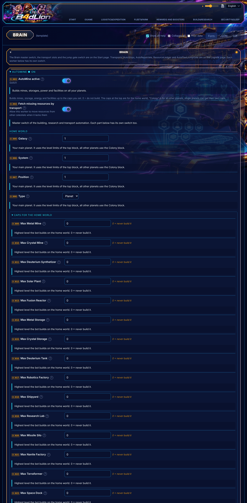

Build & Research
Here you control what the bot builds and researches: mines, lifeform buildings (LF), research, ships and defence. Each tab edits its own part of the Brain config block. Only the matching part is saved per tab, and the values are read fresh before writing. At the top right there are Hide data and, with several instances, the instance selection.


LF mines
Shows per planet (sorted by coordinate) the active lifeform and the 12 lifeform buildings with picture, current level and target. At the top are the mine values of Brain.LifeformAutoMine (switch LF mines active, start crystal mine level, target series 0-18, caps for population, food, technology). Manual target levels per building are stored as separate values per planet (yellow); they only apply to the race they were saved with.
- Change values at the top and click Save changes (Discard resets).
- Enter a number under a building tile to override the target of that planet; Base values resets it to the default.
- For many planets: use the collapsible field Override for selected planets (all races), select planets, click Apply, then save.
LF research
Shows per planet the lifeform techs actually assigned (18 slots in T1/T2/T3) with current level and status. Editable are target and priority per slot, the maximum research level per planet and the switch LF research active. Planets without their own set use the global set; the first change creates the own set as a copy. Excluded planets appear as paused (you edit that in the Exclusions tab).
- Change the defaults or the values of a planet, then Save changes.
- Select planets and click Copy to selected planets to transfer the defaults.
- Reset brings back the config defaults for a planet.
Build overview
Live view of the mine plan, read-only (AutoMine writes the data). At the top a frame shows whether and how things are built (e.g. OFFLINE with build order Off, LIVE with Cheapest per planet or by plan), below it per planet the next steps for mines, LF buildings and LF research as well as the build requests (Open, Waiting for delivery, Delivery on the way, Stock is enough, Built in 24 h). The collapsible field Plan settings (mine plan) holds values of Experimental.MinePlanRanking.
- Open Plan settings (mine plan), change values, Save changes or Discard.
- You set the order of all buildings, according to the display, on the start page (Order of all buildings).
AutoMine
Edits Brain.AutoMine: the card Mine values (AutoMine) with switches and numbers, below it per planet and moon the current building level (Now) and the target. Home planet and home moon use the home values, all other celestial bodies the colony values (if all colony values are 0, the home values apply there too). A celestial body's own target is marked yellow and saved as a ColonyOverrides entry.
- Change the card's values and Save changes.
- Apply start phase (colonies) enters the start phase values as maximum levels (mines 15/12/12, solar plant 10, robotics 2, research lab 1, shipyard 1); then adjust and save.
- Select celestial bodies and copy the base values to them, or Reset own targets to use the colony values again.
Exclusions
A matrix of planets and moons against workers. A (red) tick means: this celestial body is excluded for the worker. Columns include AutoMine, LF mines, LF research, AutoShips, AutoDefence, Repatriate, Jump Gate and Sleep fleetsave. Below are the run intervals of the workers (random time between from and to, in minutes).
- Set or remove ticks, select several celestial bodies and use Exclude from worker …, or Remove from all exclusions.
- Change intervals and Save changes.
Research
The account researches (Brain.AutoResearch) as a row of tiles with picture, maximum level and priority tick. In a collapsible block below are the switches and numbers: AutoResearch active, check interval min/max, Research at low lab, Ensure expedition slots, Force expedition start, Optimize for start, Transports, Plasma priority checks payback.
- Enter the maximum level per technology and set the priority with the tick.
- Open the options, change them, Save changes.
AutoShips
Ship building (config key Brain.AutoCargo). The tile row is the priority from left to right: one order per celestial body and run, namely the first ship from the left whose target amount is not yet reached. The freighter can be moved like any other ship. Pathfinder needs the Discoverer class, Reaper the General class; crawlers are limited by the game. Excluded celestial bodies are in the Exclusions tab.
- Drag a ship by its picture or move it in priority with the arrows; enter Keep/Target per celestial body.
- Add ship adds a ship at the end (lowest priority, target 0); an entry can be removed.
- Set options and Save changes.
AutoDefence
Target values of the defence per planet and moon as a tile row (the moon hangs behind its planet). Without its own entry the defaults apply (celestial bodies without own values); the first intervention on a celestial body creates its own set (Overrides, exact coordinate). Options: AutoDefence active, check interval, Fetch resources by transport, Max. production hours, Random order, Skip moons.
- Change the defaults or the values of a celestial body; Take stock as target adopts the built stock as target.
- Select celestial bodies and use Copy to selected or Copy to all.
- Defaults to 0 sets all defaults to 0 (celestial bodies without own values then build nothing; only effective after Save).
- Save changes.
Notes
- Changes only apply after Save changes; Unsaved/Saved shows the state. Discard resets.
- If the build order is set to Off, no build starts (AutoMine, AutoResearch, LF mines, LF research); the build overview is then only a preview.
- According to the code there are also the older pages Build order (read-only: what the Brain workers want to build per celestial body and last started) and Build calculation (mine plan: costs, extra yield, payback, energy; changes nothing). They link to each other through the Build order and Build calculation tabs, but according to the layout have no entry in the main bar.